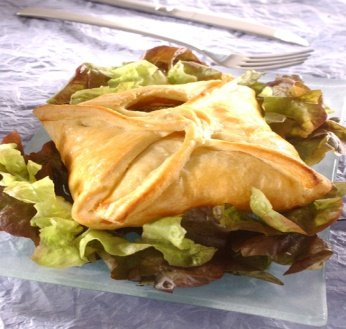

Feuilletés poireaux saumon
Ingrédients
4×
- 1 poireau
- 2 pavés de saumon crus
- 1 pâte feuilletée
- sel
- 1 jus de citron
- Boursin ail et fines herbes
- 1 œuf

Préparation
Étape 1
Préchauffer le four à 180ºC.
Étape 2
Nettoyer 1 poireau, le couper en fines lamelles et le blanchir dans l’eau bouillante jusqu’à ce qu’il soit tendre.
Étape 3
Retirer la peau de 2 pavés de saumon crus et les couper en deux. Couper en quatre 1 pâte feuilletée.
Étape 4
Sur chaque part, garnir : saumon, sel, quelques gouttes de 1 jus de citron, 1 cas de Boursin ail et fines herbes, poireau. Refermer complètement.
Étape 5
Badigeonner de 1 œuf battu et enfourner 15min.
Résumé
1 poireau
couper en fines lamelles blanchir
2 pavés de saumon crus
1 pâte feuilletée
couper en deux Couper en quatre
sel
1 jus de citron
Boursin ail et fines herbes
garnir Refermer
1 œuf
enfourner